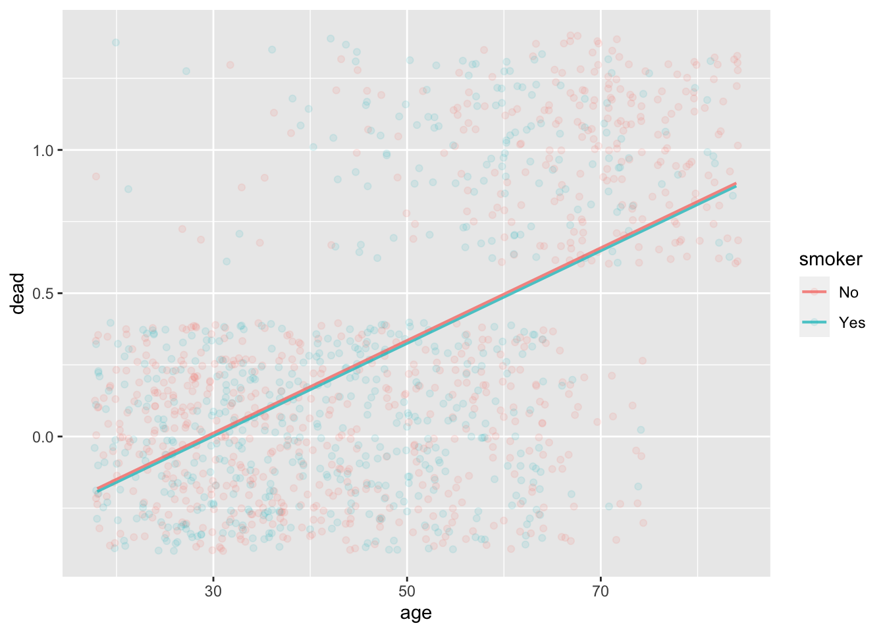
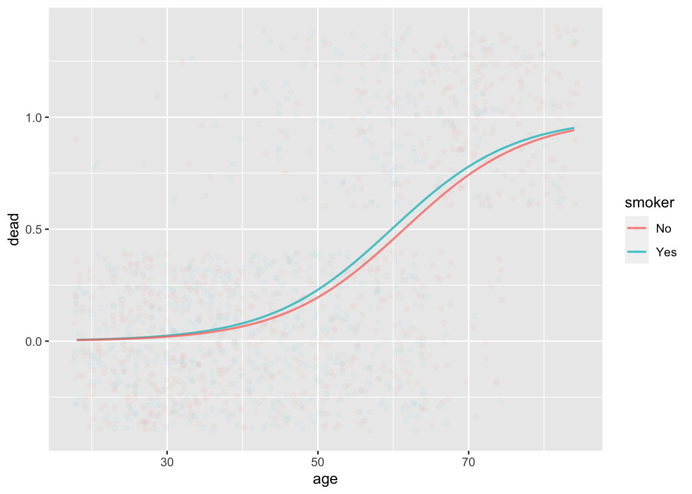

Whickham <- Whickham |>
mutate(dead = zero_one(outcome, one="Dead"))Instructor Teaching Notes for Lesson 34
Math300Z
Start-up task
Before class begins, open your posit.cloud account and, in the console, give this command to update the {math300} package. (There have been a fixes, extensions, and additional data sets.)
remotes::install_github("dtkaplan/math300")We will do the class activity in two phases:
- Now: Create the Rmd file per the instructions, run the model and interpret the graph.
- Later: Switch to logistic regression, search for explanatory variables that stratify the risk nicely.
Link to Lesson 34 activity:
dtkaplan.github.io/Math-300Z/Day-by-day/Lesson-34/CHD-risk.htmlReview of Lesson 33
In statistical terms, a risk is a probability associated with an outcome.
A full description of risk looks much like a prediction: a complete list of possible outcomes, each associated with a probability, which we’ll call a risk level.
A risk level is properly measured as a pure number, e.g. 30 percent.
- Being a probability, such numbers must always be between 0 and 1, or, equivalently, between 0 and 100 percent.
- There are two ways of referring to percentages, e.g. 30 percent vs 30 percentage points. When talking about a single risk, these two are equivalent. However, “percentage points” should be reserved for a particular situation: Describing a change in absolute risk.
For simplicity, we will focus on situations where there are only two outcomes, e.g. alive/dead, success/failure, cancer/not, diabetes/not.
Since there are only two outcomes, knowing the probability p of one outcome automatically sets the probability of the other outcome.
One of the outcomes is worse than the other, so we usually take the risk to be the worse outcome and its probability.
A risk factor is a condition, behavior, or such that changes the probability of the (worse) outcome. Just to have concise names, we will use this terminology:
- baseline risk (level): the risk (level) without the risk factor applying.
- augmented risk (level) : the risk (level) when the risk factor applies.
A risk ratio is exactly what the name implies: the ratio of the augmented risk to the baseline risk.
- For instance, suppose the baseline risk is 30 percent and the augmented risk is 45%. Then the risk ratio is 45/30 = 1.5 = 150 percent. Risk ratios are often greater than 1, which should remind us that a risk ratio is a different kind of beast from a risk, which can never be larger than 1.
There are two distinct uses for risk factors:
- Draw attention to a factor under our control (e.g. skiing, biking, using a motorcycle, smoking) so that we can decide whether the augmentation in risk is worth avoiding.
- Establish the baseline risk in a relevant way (e.g. our age, sex, and so on).
For decision-making regarding a risk factor, it is most meaningful to focus on the change in absolute risk, that is, the difference between the augmented risk and the baseline risk.
- Example: The risk ratio for the smoking risk factor is about 2.5/1 for ten-year, all-cause mortality. If the baseline risk is 3 percentage points, the augmented risk is 7.5%. Consequently, the augmentation in risk for smoking is (2.5-1) x 3% = 4.5 percentage points. On the other hand, if the baseline risk were 30 percentage points, the 2.5 risk ratio increases the the risk by 45 percentage points.
- Notice that we are describing the augmentation in risk as “percentage points.” Always use “percentage points” to avoid ambiguity. If we had said, “45 percent,” people might mistake the augmentation in risk as a risk ratio of 1.45.
Question: Why bother to present risk factors in terms of risk ratios when for decision-making it’s better to use the augmentation in risk in percentage points?
Answer: Because the same risk factor can lead to different amounts of augmentation depending on the baseline risk. If there are multiple risk factors, then adding up such augmentations can potentially lead to the risk level exceeding 100%.
One reason there are multiple risk factors is that we often need to adjust for confounders, etc., which means putting more factors into consideration.
Accumulating risk: the mathematics
Using the Whickham data, calculate the 20-year mortality rate for smokers and for non-smokers. (Warning: these data contain a historical artifact which makes the result unreliable.)
Convert the categorical outcome to a zero-one variable
Model the zero-one response by smoker:
lm(dead ~ smoker, data=Whickham) |> conf_interval()# A tibble: 2 × 4
term .lwr .coef .upr
<chr> <dbl> <dbl> <dbl>
1 (Intercept) 0.282 0.314 0.347
2 smokerYes -0.124 -0.0754 -0.0265- The baseline 20-year mortality risk is 31%.
- The 20-year mortality risk for smokers is 31% - 7% = 24%.
This analysis leaves out a huge risk factor: age.
The “adjusted risk ratio” for a risk factor is the effect size, with respect to that risk factor, holding the covariates constant.
As with linear regression, to “hold the covariates constant” they have to be included in the model of risk.
Our standard modeling framework adds together contributions from different variables. For risk, this might look like
risk = intercept + a_1_ smoker + a_2_ high_cholesterol + a_3_ high_BP + a_4_ age + …
Let’s try this with Whickham:
mod1 <- lm(dead ~ smoker + age, data=Whickham)
mod1 |> conf_interval()# A tibble: 3 × 4
term .lwr .coef .upr
<chr> <dbl> <dbl> <dbl>
1 (Intercept) -0.532 -0.473 -0.414
2 smokerYes -0.0489 -0.0105 0.0279
3 age 0.0151 0.0162 0.0173model_plot(mod1, x=age, color=smoker, data_alpha=0.1)
Interpretation (naive):
- (intercept) the 20-year mortality rate for a newborn is -47%
- (age) mortality risk increases by 1.6 percentage points per year
- (smoking) reduces mortality risk by 1 percentage point.
Mathematical problem: The mortality rate at any age has to be between 0 and 100%.
Solution (used universally): Don’t model probability (which has to stay in [0-1]). Instead, model log odds.
Odds: For probability p the corresponding odds is p/(1-p). It’s exactly the same information, but in a different format. But odds range from 0 to \(\infty\), so we don’t need to worry about them going out of bounds on the high side.
Logarithm of odds: For probability p the log odds is ln(p) - ln(1-p). This can range from \(-\infty\) to \(\infty\).
This model will never go out of bounds.
log odds = intercept + a_1_ smoker + a_2_ high_cholesterol + a_3_ high_BP + a_4_ age + …
To find the coefficients, we use a mathematical technique called “logistic regression”.
mod2 <- glm(dead ~ smoker + age, data=Whickham, family="binomial")
mod2 |> conf_interval()# A tibble: 3 × 4
term .lwr .coef .upr
<chr> <dbl> <dbl> <dbl>
1 (Intercept) -8.50 -7.60 -6.77
2 smokerYes -0.124 0.205 0.537
3 age 0.110 0.124 0.138model_plot(mod2, x=age, color=smoker, data_alpha=0.03)
Smoking increases the log odds of mortality by 0.20 (although zero is included in the confidence interval). Each additional year of age increases log odds by 0.12.
For instance, for a 50-year old smoker, 20-year mortality expressed as log odds is:
\[\ln(\text{odds}) = -7.6 + 0.20 + 0.12\times 50 = -1.4\]
Something interesting happens when we convert to odds:
\[odds = e^{\ln(odds)} = e^{-7.6 + 0.20 + 0.12\times50} = \underbrace{e^{-7.6}}_\text{baseline} \times \underbrace{e^{0.20}}_\text{odds ratio} \times \underbrace{e^{0.12\times 50}}_\text{odds ratio}\] \[ odds = \underbrace{0.0005}_\text{baseline} \times \underbrace{1.22}_\text{odds ratio for smoking} \times \underbrace{403}_\text{odds ratio for age 50}\]
Each factor in logistic regression contributes a multiplicative odds ratio. How is that related to a risk ratio?
contour_plot(p1/p2 ~ p1 + p2, bounds(p1=0.01:0.10, p2=0.01:0.10)) + labs(title="Risk Ratios")contour_plot(p1*(1-p2)/(p2*(1-p1)) ~ p1 + p2, bounds(p1=0.01:0.10, p2=0.01:0.1)) + labs(title="Odds Ratios")Risk ratios and odds ratios are practically the same thing, so long as p1 and p2 are small.
SUMMARY:
- Odds don’t add.
- Instead, odds ratios multiply.
- Need a baseline odds to calculate the overall odds, multiplying baseline by the appropriate odds ratios.
- We often interpret odds ratios as risk ratios. Not too bad when the odds (both numerator and denominator) are small, say < 0.1.
Activity
Building a model of risk.